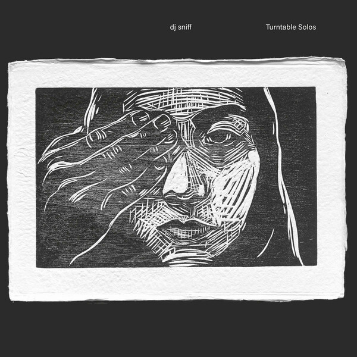
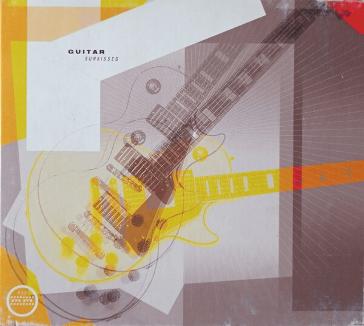
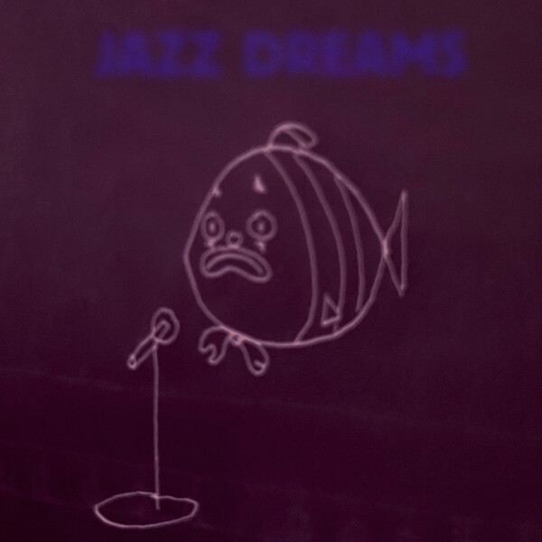
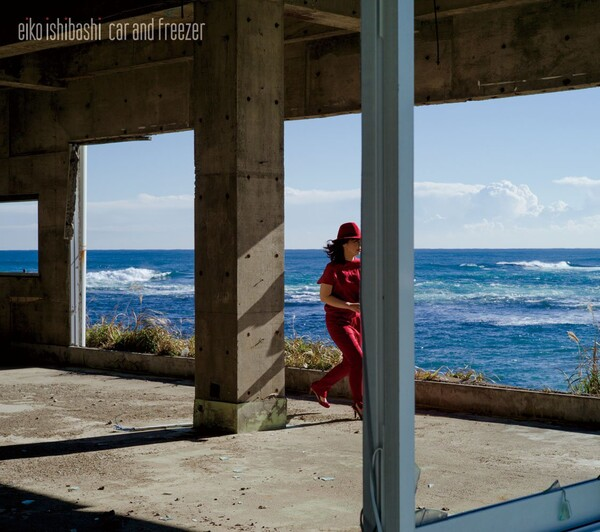
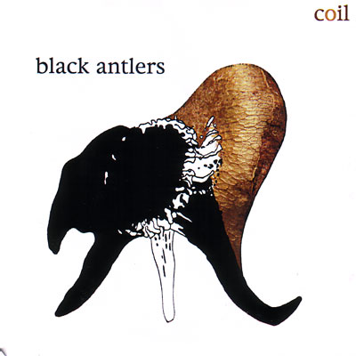

Here be pirates
DJ Sniff - Turntable Solos (2025): Frentic, excited to see this guy live tomorrow.

Guitar - Sunkissed (2002): Shoegaze with heavy trip hop beats, the title track is this sound at it's best.

Fine - Jazz dreams (2026): Somewhere between Portishead and Dean Blunt, glued together by excellent songwriting sensibilities.

Eiko Ishibashi(石橋英子) - Car and Freezer (2014): I like the 80s sophistipop style with live instrumentation, didn't really stick with me sadly.

Coil - Black Antlers - (2004): "Sex with Sun Ra" is phenomenal (quote that out of context please).
